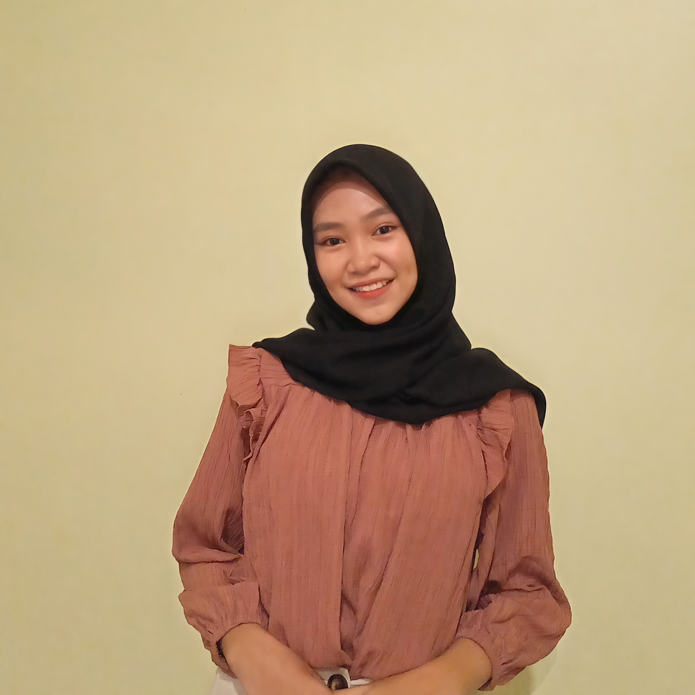

|  | Nama | : Niken Ayu Wijaya |
| Tempat, Tanggal Lahir | : Pemalang, 23 Maret 2003 | |
| Alamat | : Jalan Suwaryo Rt 009 Rw 002, Semingkir, kec.Randudongkal, kab.Pemalang | |
| Status | : Mahasiswa | |
| : nikenwjy23@gmail.com | ||
| Media Sosial |
| Sekolah Dasar | : SDN 04 Semingkir (2009 - 2015) |
| Sekolah Menengah Pertama | : SMPN 1 Randudongkal (2015 - 2018) |
| Sekolah Menengah Atas | : MAN Pemalang (2018 - 2021) |
| Perguruan Tinggi | : Universitas Jenderal Soedirman (2021 - sekarang) |
| Hari | Mata Kuliah | Jam | Dosen pengampu |
|---|---|---|---|
| Senin | Basis Data II B | 08:50 - 09.40 s.d 09.45 - 10.35 | Lasmedi Afuan |
| E-Commerce A | 10.40 - 11.30 s.d 11.35 -12.25 | Nurul Hidayat | |
| Struktur Data C | 13.55 - 14.45 s.d 14.50 - 15.40 | Bangun Wijayanto | |
| Selasa | Probabilitas dan Statistika A | 07.00 - 07.50 s.d 07.55 - 08.45 | Yogiek Indra Kurniawan |
| Praktikum Sistem Operasi C | 09.45 - 10.35 | Arief Kelik Nugroho | |
| Pancasila A | 10.40 - 11.30, 11.35 - 12.25 | Musmuallim | |
| Praktikum Struktur Data B | 13.55 - 14.45 | Bangun Wijayanto | |
| Rabu | Matematika Diskrit A | 09.45 - 10.35 s.d 11.35 - 12.25 | Ipung Permadi |
| Sistem Operasi A | 13.00 - 13.50 s.d 14.50 - 15.40 | Arief Kelik Nugroho | |
| Kamis | Jati Diri Unsoed B | 07.00 - 07.50 s.d 07.55 - 08.45 | Ipung Permadi |
| Web Design | 08.50 - 09.40 s.d 09.45 - 10.35 | Nurul Hidayat |
Kesibukan saya saat ini adalah menjalani perkuliahan sebagai mahasiswa semester 2 di jurusan Informatika Unsoed. Saya juga mengikuti Himpunan Mahasiswa di jurusan Informatika atau dikenal HMIF. Di HMIF ini saya masuk ke divisi Keilmuan dan Teknologi (ILTEK). |
Di semester 2 ini, saya telah mengikuti 1 kepanitiaan, yaitu Kepanitiaan Sosialisasi IMP Unsoed 2022. Dikepanitiaan tersebut saya dan teman teman saya membuat acara sosialisasi pengenalan Unsoed kepada siswa-siswa SMA kelas 12 yang ada di Kabupaten Pemalang. Acara tersebut dilaksanakan secara hybrid, kami melakukan sosialisasi offline di sebagian sekolah, sebagiannya lagi dilaksanakan secara online. |
Disemester lalu, saya berkesempatan untuk mengikuti rangkaian acara yang diadakan oleh BEM FT Unsoed. Acaranya yaitu School Of Leadership (SOL). Yaitu sebuah acara untuk melatih kepemimpinan yang acaranya dilaksanakan selama 1 minggu. Diacara tersebut, saya dituntut untuk bisa memecahkan masalah dengan cepat dan tepat, berdiskusi, dan team work. |